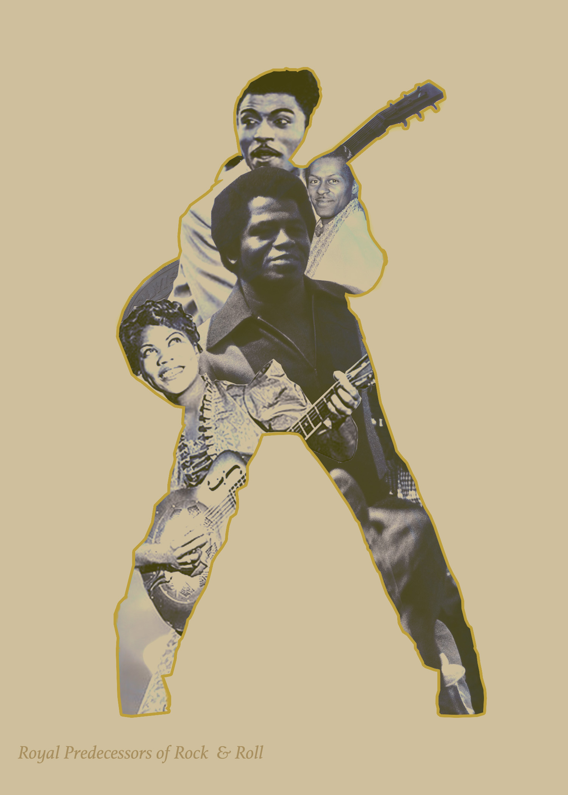

Below is my first image. I wanted to add my piece to the pool of social commentary on the state of our country and the foundations on which it was built. Much like this collage of the American flag, the America we once knew (or have been indoctrinated into believing), has become distorted. The blood spilled in the name of conquest that our officials desperately tried to hide from the population has finally become too great to keep from soaking through the very fabric of our nation. This photo should be landscape and oriented upside down to simulate the naval distress signal used to alert an urgent SOS.
To edit this image, I started by downloading some blood stain patterns and selecting the pieces of the pattern that I needed by double clicking on the new layer. Next, I added the selection back to the main project and used blend mode linear burn. To incorporate the blood spatter more cohesively,
I added a curves adjustment layer and made sure these changes only affected the blood layer by creating a clipping mask. I then added a channel mixer layer on top to deepen the red hue. From here, the photo still looked pretty bland. So, I added two more blood splatters. I edited that layer with curves, hue/saturation, and color balance. The third splatter is to add messiness to the once "pristine" appearance of the flag. Then, I added a small rip that can be seen on the lefthand side of the image (just to add drama, because, as we know, I love drama).
I placed a photo filter on top for warmth, added a sepia tone and set the blend mode to dissolve for that grainy look, and slightly adjusted the brightness and contrast to my liking.
All photos and textures sourced from unsplash, pexels texturelabs, and the creative commons database.


Below is my second image.
